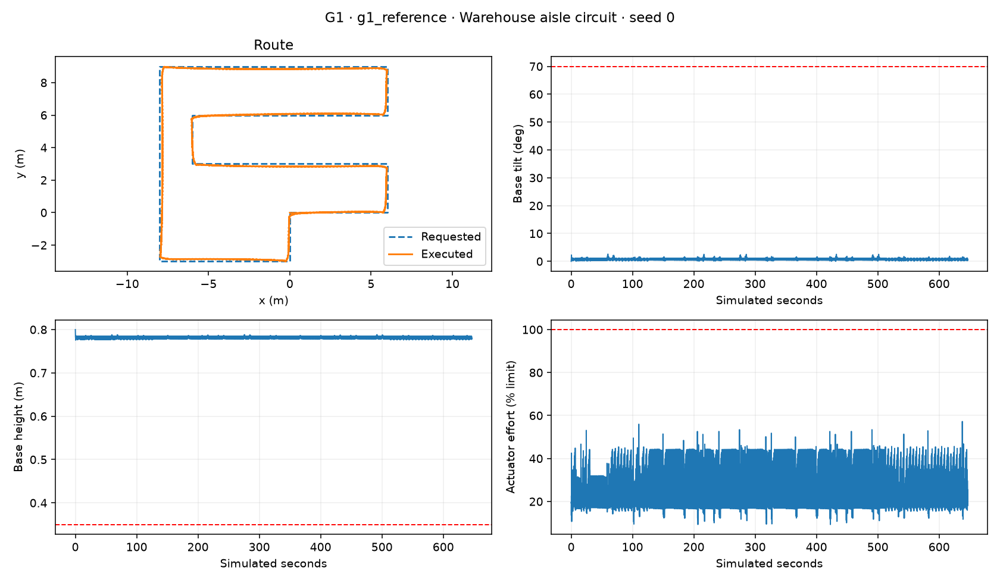
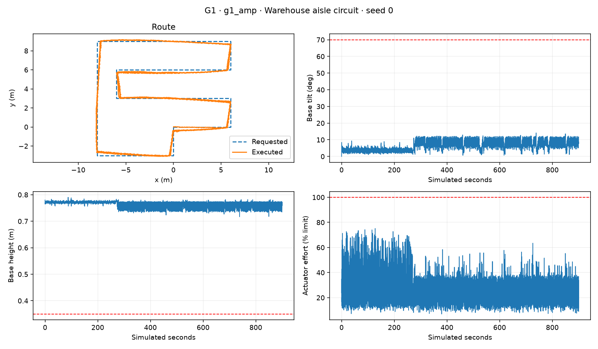
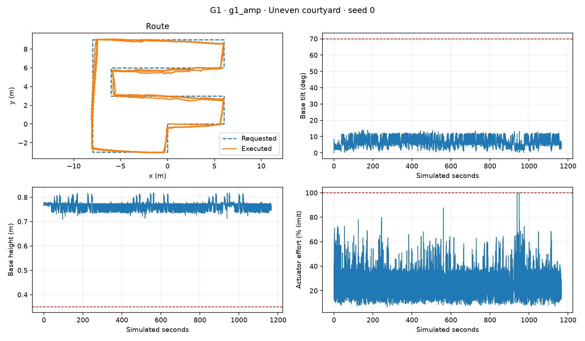
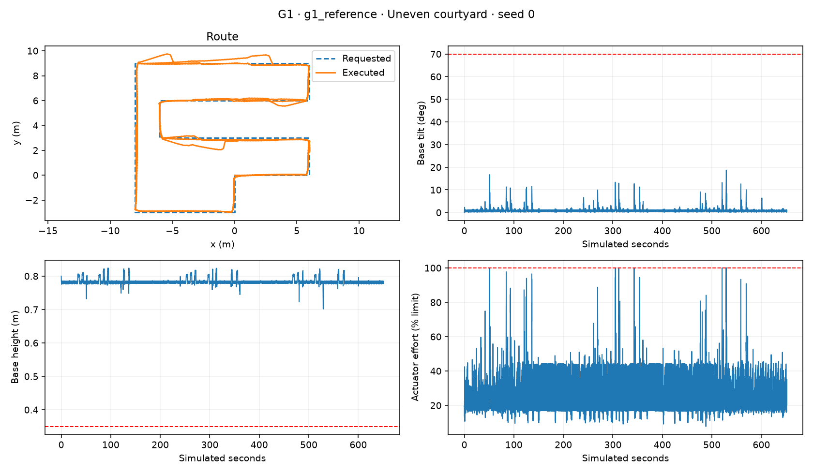
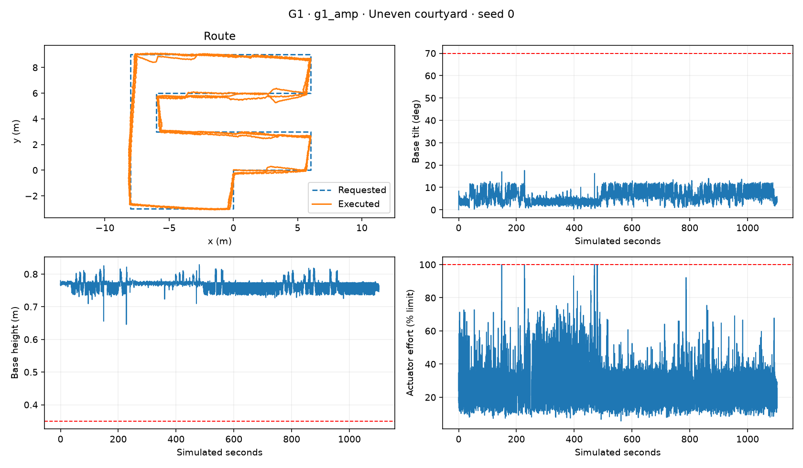
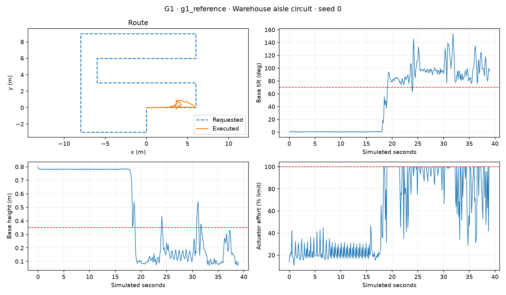
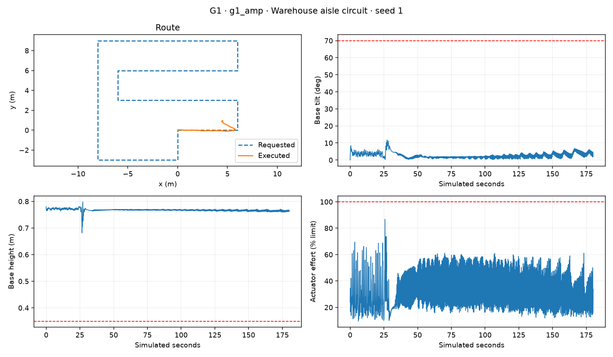

g1_reference · seed 0 · Initial fixed-deadline study

run 227ce82a400b48d1 · course warehouse · seed 0 · distance 224.72 m
manifest summary trace (.jsonl.gz) review video event video figures poster
Beyond Recovery research home · Public report snapshot · Artifact checksums
Native simulation evidence · MuJoCo 4.0.1
This report aggregates saved qualification summaries for a 29-actuator Unitree G1 model. It describes these tested policy/controller configurations and routes; it is not a hardware evaluation, safety certification, or validated recoverability benchmark.
Across the included trials there are 36 completed, 18 timed out, 0 recorded falls, 0 technical errors. A timeout means the route did not finish before the simulation horizon; it is not a fall. The initial cohort used a fixed 900-second horizon. The separate 1,500-second AMP controls show why deadline matters: route completion depends on both locomotion and time/path required.
The two profiles have different servo/controller gains and effort settings; this is a comparison of complete policy-plus-controller configurations, not an isolated algorithm comparison. AMP follows wider turns and longer paths. The initial fixed-deadline result therefore cannot be read as a pure stability ranking.
Only 2 profiles passed the saved G1 integration audit. This is not a statement that all policies in the registry are compatible or qualified.
| Cohort | Profile | Trials | Completed | Timeouts | Falls* | Technical errors | Sim time, median (range), s | Path distance, median (range), m |
|---|---|---|---|---|---|---|---|---|
| Initial fixed-deadline study900 s; 6 courses × 3 seeds per policy | g1_reference | 18 | 18 | 0 | 0 | 0 | 646.6630.9–652.0 | 224.7224.7–225.7 |
| Initial fixed-deadline study900 s; 6 courses × 3 seeds per policy | g1_amp | 18 | 0 | 18 | 0 | 0 | 900.1900.1–900.1 | 207.4202.2–218.5 |
| Longer-deadline controls1500 s; 3 courses × 2 seeds for AMP | g1_amp | 6 | 6 | 0 | 0 | 0 | 1165.31072.9–1213.8 | 268.7258.1–273.9 |
| Lateral-pulse study1500 s; 3 courses × 2 seeds per policy | g1_reference | 6 | 6 | 0 | 0 | 0 | 653.6644.6–658.4 | 228.9228.9–229.7 |
| Lateral-pulse study1500 s; 3 courses × 2 seeds per policy | g1_amp | 6 | 6 | 0 | 0 | 0 | 1118.31059.4–1208.8 | 262.9255.4–275.4 |
*Fall count comes from a recorded fall status or a non-null first_fall_s; it can overlap with the ending status. Median and range use available saved elapsed_s and distance_m values; no values are imputed.
The long-route disturbance cohort schedules five 180 N force pulses in fixed world coordinates, along world Y, for 0.2 s at 120, 240, 360, 480 and 600 simulated seconds. The protocol has a 20 s recovery window and defines resumed walking as height above 0.65 m and tilt below 30° continuously for 2 s. World Y is not necessarily lateral relative to the robot at every heading.
All saved long-route pulse-study trials completed without a recorded fall. That all-pass result does not prove the pulses stressed recovery enough, nor validate recoverability preservation. The separate phase-triggered probe below includes stronger cases that did produce falls. Both studies are small and do not establish broad robustness.
VLA runtime status: pass · controller compatibility: blocked_embodiment_mismatch · finite outputs: yes.
Video artifacts, when present, are 10 Hz reconstructions from saved simulator state using that trial's saved model. Review video is about 8× speed; event video is real time. They are not original camera recordings.
At most one run per cohort and profile. Where video.json reports renderer version 2 or later and the file exists, the recorded-state review clip is embedded with controls. Pending artifacts remain linked; these are 10 Hz state replays, not camera capture.

run 227ce82a400b48d1 · course warehouse · seed 0 · distance 224.72 m
manifest summary trace (.jsonl.gz) review video event video figures poster

run 22e906a3a36a402c · course warehouse · seed 0 · distance 209.11 m
manifest summary trace (.jsonl.gz) review video event video figures poster

run c040ea4e6d42431d · course courtyard · seed 0 · distance 269.96 m
manifest summary trace (.jsonl.gz) review video event video figures poster

run f2287fbac0334851 · course courtyard · seed 0 · distance 229.66 m · 0 recorded fall episode(s)
manifest summary trace (.jsonl.gz) review video event video figures poster

run d4c2bd0891e2402f · course courtyard · seed 0 · distance 262.46 m · 0 recorded fall episode(s)
manifest summary trace (.jsonl.gz) review video event video figures poster
| Cohort | Profile | Course | Seed | Status | Sim time, s | Distance, m | Evidence |
|---|---|---|---|---|---|---|---|
| Initial fixed-deadline study | g1_reference | warehouse | 0 | completed | 646.6 | 224.7 | manifest |
| Initial fixed-deadline study | g1_reference | warehouse | 1 | completed | 646.6 | 224.7 | manifest |
| Initial fixed-deadline study | g1_reference | warehouse | 2 | completed | 646.6 | 224.7 | manifest |
| Initial fixed-deadline study | g1_reference | office | 0 | completed | 646.6 | 224.7 | manifest |
| Initial fixed-deadline study | g1_reference | office | 2 | completed | 646.6 | 224.7 | manifest |
| Initial fixed-deadline study | g1_reference | office | 1 | completed | 646.6 | 224.7 | manifest |
| Initial fixed-deadline study | g1_reference | courtyard | 1 | completed | 630.9 | 225.7 | manifest |
| Initial fixed-deadline study | g1_reference | courtyard | 0 | completed | 643.2 | 225.5 | manifest |
| Initial fixed-deadline study | g1_reference | courtyard | 2 | completed | 641.8 | 225.4 | manifest |
| Initial fixed-deadline study | g1_reference | renovation | 1 | completed | 641.8 | 225.6 | manifest |
| Initial fixed-deadline study | g1_reference | renovation | 0 | completed | 641.2 | 225.4 | manifest |
| Initial fixed-deadline study | g1_reference | renovation | 2 | completed | 639.4 | 225.5 | manifest |
| Initial fixed-deadline study | g1_reference | service | 1 | completed | 646.6 | 224.7 | manifest |
| Initial fixed-deadline study | g1_reference | service | 0 | completed | 646.6 | 224.7 | manifest |
| Initial fixed-deadline study | g1_reference | service | 2 | completed | 646.6 | 224.7 | manifest |
| Initial fixed-deadline study | g1_reference | crossings | 0 | completed | 652.0 | 224.8 | manifest |
| Initial fixed-deadline study | g1_reference | crossings | 1 | completed | 652.0 | 224.9 | manifest |
| Initial fixed-deadline study | g1_reference | crossings | 2 | completed | 652.0 | 224.7 | manifest |
| Initial fixed-deadline study | g1_amp | warehouse | 0 | timeout | 900.1 | 209.1 | manifest |
| Initial fixed-deadline study | g1_amp | warehouse | 1 | timeout | 900.1 | 203.8 | manifest |
| Initial fixed-deadline study | g1_amp | warehouse | 2 | timeout | 900.1 | 202.2 | manifest |
| Initial fixed-deadline study | g1_amp | office | 0 | timeout | 900.1 | 203.0 | manifest |
| Initial fixed-deadline study | g1_amp | office | 1 | timeout | 900.1 | 207.4 | manifest |
| Initial fixed-deadline study | g1_amp | office | 2 | timeout | 900.1 | 205.8 | manifest |
| Initial fixed-deadline study | g1_amp | courtyard | 0 | timeout | 900.1 | 207.7 | manifest |
| Initial fixed-deadline study | g1_amp | courtyard | 1 | timeout | 900.1 | 218.5 | manifest |
| Initial fixed-deadline study | g1_amp | courtyard | 2 | timeout | 900.1 | 217.7 | manifest |
| Initial fixed-deadline study | g1_amp | renovation | 0 | timeout | 900.1 | 204.2 | manifest |
| Initial fixed-deadline study | g1_amp | renovation | 1 | timeout | 900.1 | 212.8 | manifest |
| Initial fixed-deadline study | g1_amp | renovation | 2 | timeout | 900.1 | 212.9 | manifest |
| Initial fixed-deadline study | g1_amp | service | 0 | timeout | 900.1 | 203.3 | manifest |
| Initial fixed-deadline study | g1_amp | service | 1 | timeout | 900.1 | 207.5 | manifest |
| Initial fixed-deadline study | g1_amp | service | 2 | timeout | 900.1 | 206.3 | manifest |
| Initial fixed-deadline study | g1_amp | crossings | 0 | timeout | 900.1 | 206.4 | manifest |
| Initial fixed-deadline study | g1_amp | crossings | 1 | timeout | 900.1 | 208.5 | manifest |
| Initial fixed-deadline study | g1_amp | crossings | 2 | timeout | 900.1 | 211.4 | manifest |
| Longer-deadline controls | g1_amp | courtyard | 0 | completed | 1165.9 | 270.0 | manifest |
| Longer-deadline controls | g1_amp | warehouse | 0 | completed | 1145.3 | 263.7 | manifest |
| Longer-deadline controls | g1_amp | warehouse | 1 | completed | 1213.8 | 273.9 | manifest |
| Longer-deadline controls | g1_amp | courtyard | 1 | completed | 1072.9 | 258.1 | manifest |
| Longer-deadline controls | g1_amp | crossings | 1 | completed | 1164.8 | 267.4 | manifest |
| Longer-deadline controls | g1_amp | crossings | 0 | completed | 1196.2 | 272.5 | manifest |
| Lateral-pulse study | g1_reference | courtyard | 0 | completed | 651.1 | 229.7 | manifest |
| Lateral-pulse study | g1_reference | warehouse | 1 | completed | 653.6 | 228.9 | manifest |
| Lateral-pulse study | g1_reference | warehouse | 0 | completed | 653.6 | 228.9 | manifest |
| Lateral-pulse study | g1_reference | courtyard | 1 | completed | 644.6 | 229.6 | manifest |
| Lateral-pulse study | g1_reference | crossings | 0 | completed | 658.4 | 228.9 | manifest |
| Lateral-pulse study | g1_reference | crossings | 1 | completed | 658.4 | 228.9 | manifest |
| Lateral-pulse study | g1_amp | courtyard | 0 | completed | 1102.0 | 262.5 | manifest |
| Lateral-pulse study | g1_amp | warehouse | 0 | completed | 1134.5 | 263.4 | manifest |
| Lateral-pulse study | g1_amp | warehouse | 1 | completed | 1208.8 | 275.4 | manifest |
| Lateral-pulse study | g1_amp | courtyard | 1 | completed | 1091.2 | 260.9 | manifest |
| Lateral-pulse study | g1_amp | crossings | 0 | completed | 1195.5 | 274.5 | manifest |
| Lateral-pulse study | g1_amp | crossings | 1 | completed | 1059.4 | 255.4 | manifest |
These probes are separate boundary-stress experiments, not part of the 54-trial long-route cohort totals above. The saved input records 12 probes, 2 trials with a recorded fall, 0 recovery episodes, 10 probe timeouts, and 0 technical errors. A timeout in this short probe is not a task-benchmark failure.
The protocol is two profiles × three force magnitudes (120/240/360 N) × two seeds. A 0.2 s body-lateral-Y push begins 2 s after entering the first 90° turn, with a 180 s observation window on one warehouse lap. The same waypoint does not guarantee identical gait phase across runs; these are still native simulated sensor/control probes.
At 360 N, reference-profile falls: 2/2; recorded first-fall times: 18.4–18.9 s, with 20.1–20.1 s of additional simulation before each saved trial ended. AMP 360 N falls: 0/2. The AMP seed-1 360 N distance was 20.04 m; the median distance across AMP 120/240 N probes was 42.08 m. These observations suggest a stability/progress trade-off in this configuration; different gains mean they do not isolate an algorithm effect.
Side-by-side 10 Hz state replays at real time, with saved policy, seed, force, distance, and fall count shown per clip.

run d1d36c4416f34f2e · course warehouse · 360 N body-lateral-Y pulse · seed 0 · distance 15.70 m · 1 recorded fall episode(s)
manifest summary trace (.jsonl.gz) review video event video figures poster

run 6730a68b0f1a4ab2 · course warehouse · 360 N body-lateral-Y pulse · seed 1 · distance 20.04 m · 0 recorded fall episode(s)
manifest summary trace (.jsonl.gz) review video event video figures poster
| Profile | Course | Seed | Force, N | Status | Probe distance, m | Matched zero-force, m | Difference, m | Fall episodes | Recovery episodes | Scheduled pushes | Evidence |
|---|---|---|---|---|---|---|---|---|---|---|---|
g1_reference | warehouse | 1 | 120 | timeout | 63.2 | 63.0 | 0.2 | 0 | 0 | — | manifest |
g1_reference | warehouse | 0 | 120 | timeout | 63.1 | 63.0 | 0.2 | 0 | 0 | — | manifest |
g1_reference | warehouse | 0 | 240 | timeout | 62.0 | 63.0 | -0.9 | 0 | 0 | — | manifest |
g1_reference | warehouse | 1 | 240 | timeout | 23.1 | 63.0 | -39.9 | 0 | 0 | — | manifest |
g1_reference | warehouse | 0 | 360 | fallen | 15.7 | 63.0 | -47.3 | 1 | 0 | — | manifest |
g1_reference | warehouse | 1 | 360 | fallen | 16.9 | 63.0 | -46.0 | 1 | 0 | — | manifest |
g1_amp | warehouse | 0 | 120 | timeout | 41.2 | 45.2 | -4.0 | 0 | 0 | — | manifest |
g1_amp | warehouse | 1 | 120 | timeout | 43.5 | 41.4 | 2.2 | 0 | 0 | — | manifest |
g1_amp | warehouse | 0 | 240 | timeout | 41.9 | 45.2 | -3.3 | 0 | 0 | — | manifest |
g1_amp | warehouse | 1 | 240 | timeout | 42.3 | 41.4 | 0.9 | 0 | 0 | — | manifest |
g1_amp | warehouse | 0 | 360 | timeout | 33.1 | 45.2 | -12.1 | 0 | 0 | — | manifest |
g1_amp | warehouse | 1 | 360 | timeout | 20.0 | 41.4 | -21.3 | 0 | 0 | — | manifest |
Compare distance, minimum height, tilt, and falls within the same profile and seed where a matching push trial is available. Probe timeouts mean the 180 s observation ended; they do not mark a failed long-route task.
| Profile | Seed | Status | Distance, m | Min height, m | Max tilt, ° | Fall episodes |
|---|---|---|---|---|---|---|
g1_reference | 0 | timeout | 63.0 | 0.775 | 2.6 | 0 |
g1_reference | 1 | timeout | 63.0 | 0.776 | 2.6 | 0 |
g1_amp | 1 | timeout | 41.4 | 0.734 | 12.2 | 0 |
g1_amp | 0 | timeout | 45.2 | 0.757 | 9.3 | 0 |
Both policy profiles have saved simulator-session logs and completed replay jobs. The records label the logs synthetic: they were captured from TwinBench's simulated Drive session, not from a physical G1. Replay compared 29 joints plus IMU and base channels; zero replay error demonstrates save/replay consistency for these simulator-generated samples, not sim-to-real calibration.
| Profile | Log source | Log length | Orientation source | Replay job | Replay type | Saved comparison |
|---|---|---|---|---|---|---|
g1_reference | synthetic | 0.48 s · 25 samples | simulated_imu_site_pose | done | synthetic replay | q RMSE 0.000 rad; dq RMSE 0.000 rad/s |
g1_amp | synthetic | 0.48 s · 25 samples | simulated_imu_site_pose | done | synthetic replay | q RMSE 0.000 rad; dq RMSE 0.000 rad/s |
In the separate regression job, walk_flat passed for both profiles. The generic stand_still PD-hold scenario failed for both: it explicitly disables the locomotion policy and requires an empty pose controller to balance. This is a limitation of that static PD-hold scenario, not a failure of either G1 locomotion policy. The simulator now starts paused with the selected policy loaded; normal Drive Start resets the scene and enables the policy before playback.
| Profile | Scenario | Result | Mean speed, m/s | Forward distance, m | Minimum pelvis height, m | Max tilt, ° |
|---|---|---|---|---|---|---|
g1_reference | stand_still | fail | 0.00 | 0.80 | 0.308 | 73.8 |
g1_reference | walk_flat | pass | 0.51 | 4.89 | 0.773 | 3.0 |
g1_amp | stand_still | fail | 0.00 | 0.80 | 0.308 | 73.8 |
g1_amp | walk_flat | pass | 0.41 | 2.70 | 0.759 | 8.0 |
The native G1 logger no longer expects the Asimov-specific imu_quat channel, which this G1 profile does not provide. It derives orientation from the simulated IMU site pose and labels that source in metadata; replay and calibration retain the G1 profile.
PAIR native startup was slowed by deleting individual unused meshes. The current root-XML bulk filter retains the original collision and visual assets. A native 1280×720 G1 view was generated with stable height 0.77875 m and tilt 2.53°; this is an observed smoke result, not a broader PAIR qualification.
The current focused native checks report 11 passed in 2.46 seconds. The broader engine suite reports 152 passed, 11 skipped in 87.30 seconds. The separate PAIR startup smoke observation above is not implied by these suite counts.
Native integration checks cover 29-actuator layout, joint/control conventions, sensor mapping and policy I/O. The platform record reports 54 known research trials and 21 outcome groups. The report generator does not read full traces.
integration: 697250eb638a871b, initial_study: 030c010503c62580, deadline_control: 4ac227e07ff26c10, disturbance_study: a750226416ba24fa, platform: e073822afd79b040, vla: 0b173837f7a4ca6e, push_probe: 54264a1253c2f69c, push_probe_controls: ea06f9d606c63a57, jobs: f185f8ff889d3210, narrative_report: f2867f78d19c5f1f
Generated 2026-11-15T20:16:14+00:00. A companion narrative report was present among inputs.